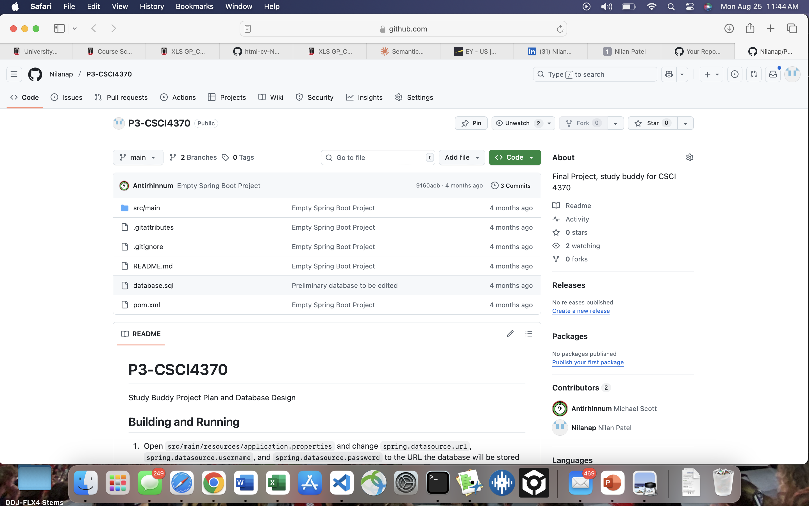
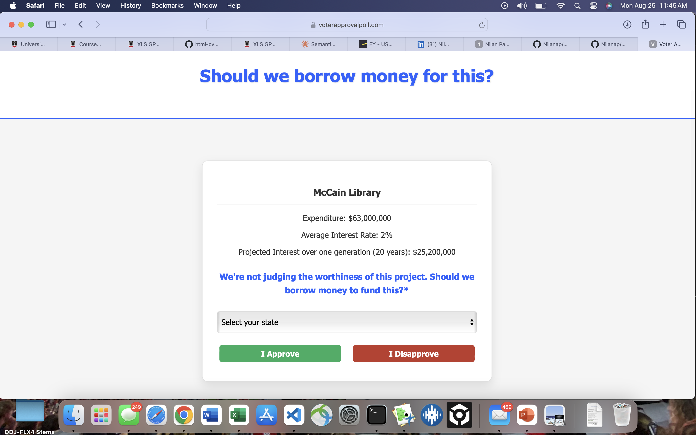
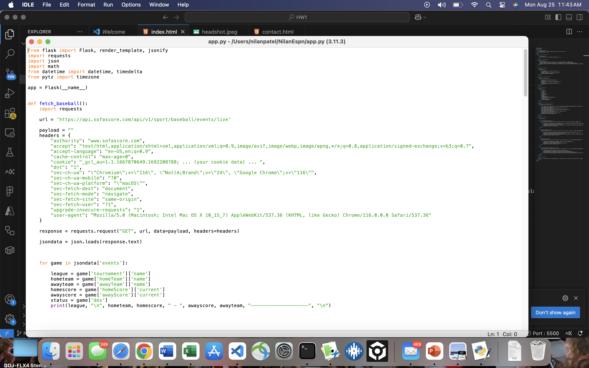

Nilan Patel
2853 Intrepid Cut Marietta GA, 30062 • 470-848-4240 • Nilanpatel20@gmail.com
Computer Science student passionate about software engineering, data engineering, and cloud technologies.
Education
- The University of Georgia, Athens, GA
- 3.62/4.00
- Bachelor of Science in Computer Science
- May 2026
Honors and Awards
- AWS Certified Cloud Practitioner
- 2024
- Microsoft Azure AZ-900 Cloud Fundamentals
- 2024
- Tricentis Tosca Automation Specialist
- 2024
Skills
- Java
- Python
- C
- MySQL
- JavaScript
- Azure
- AWS
- Kubernetes
- OOP
- Docker
- Test Automation
- Data Engineering
Leadership and Experience
- Ernst & Young, Data Engineering Consultant Intern, Atlanta, GA
- June 2025 – August 2025
- Cox Automotive, Software Engineering Intern, Atlanta, GA
- May 2025 – August 2025
- Cox Enterprises, Software Test Engineering Intern, Atlanta, GA
- May 2024 – December 2024
- Cox Automotive, Product Management Intern, Atlanta, GA
- May 2023 – August 2023
- Beta Theta Pi, VP of Finance, Athens, GA
- October 2022 – November 2024
Projects
StudyBuddy Application

- Developed a web application which allows users to find study partners based on their classes taken
- Used Docker, AWS, Java, SQL, HTML, and CSS
- Features include class entry, search functionality, user following, availability scheduling, and messaging
- Completed March 2025 – May 2025
Voter Approval Poll

- Built a web application that helps inform users about national debt and vote on bills
- Used CPanel, PHP, SQL, JavaScript, HTML, and CSS
- Features voting functionality, results viewing, and representative contact via Google Civic API
- Completed February 2025 – June 2023
ESPN Soccer App

- Created a web application using Azure, Python, Flask, and JavaScript
- Displays live soccer scores worldwide
- Invites users to Discord Forums for soccer discussions
- Completed July 2023 – September 2023